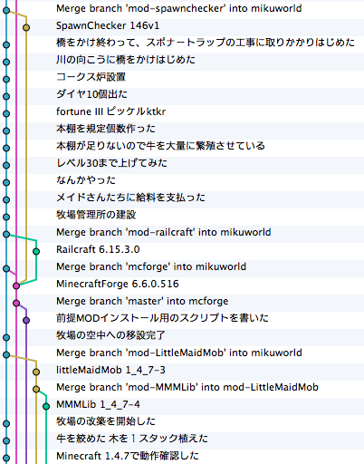

A successful Minecraft Git branching model
この記事では、私のすべてのMinecraft(シングルでもマルチでも)で約半年ほど導入して、とてもうまく行くことがわかったセーブデータ管理モデルを紹介する。しばらく前からこれについて書くつもりだったが、今まですっかりその時間を見つけられずにいた。ここでは私のマイクラライフのの詳細については書かず、単にマイクラ管理のブランチ戦略についてだけ述べよう。

ここではソースコードのバージョン管理のためのツール、Gitを使用して、MinecraftのセーブデータとMinecraft自身を管理する。
Table of Contents
1 読者に求める知識
はじめに断っておくと、この文章は殆どのクラフターには役に立たない。Gitは一般的に他のバージョン管理システムより敷居が高いと言われており、非プログラマは恐らくバージョン管理システムに触れたことがないだろう。したがって、前提知識はgitで何かプロジェクトを管理している、ということにしておく。Gitを知らなくても、Subversionなどを使っているならば、理解はそう難しくないだろうし、多くは他のバージョン管理ツールでも可能だ。また、コマンドを使わずにグラフィカルなラッパを使っても良い。現に私は、 Emacs の magit というソフトウェアと、 SourceTree を使っている。
ここで紹介するのは、皆がハッピーになる方法ではなく、エンジニアやそれに類する人が、普段ソースコードを管理するように、Minecraft を管理するために私が編み出した方法にすぎない。 Minecraft は人によって全くプレイスタイルが違う。ゆえに、以下の方法では不十分な人もいれば、細かく管理し過ぎだと思う人もいると思う。しかし、Gitを知っているのにMinecraftをGitで管理していない人にとっては、この文章は考えるきっかけをもたらすだろう。あなたにとって最適なモデルを考える参考になればなによりである。
2 何故バージョン管理か
Minecraftのデータの管理には様々な問題がある。その中でも、バージョン管理システムを使えば以下の様な問題が解決できると考えられる。
2.1 バックアップ
Minecraft のセーブデータをバックアップすることの重要性は既に語り尽くされている。しかしその方法についてはあまり議論されていない。恐らく最もメジャーな方法は、Dドライブに年月日のフォルダを作り、その中に定期的に、あるいは手動で、あるいは自動バックアップソフトでコピーをとっているのではないだろうか。最もメジャーな手動モデルには、多くの問題がある。
- バックアップが面倒 バックアップのために、Dドライブのフォルダと.minecraft/savesを開いてコピーしなければいけない。ステップ数が多すぎるのだ。 なおこの問題に限っては、自動バックアップソフトを使えば解決できる可能性がある。
- 時間がかかる minecraftのセーブデータは決して小さいとはいえず、バックアップに時間がかかる。これはどれくらいチャンクが生成されているかに依存するため、長くプレイしているマップほど（＝バックアップが重要なマップほど）、時間がかかる。
- 続かない 面倒で時間がかかることはやりたくないものだ。
-
レストアが自動化されていない
データの破損ならコピーするだけだが、minecraftやMODのバージョンアップの不具合だった場合、その時のminecraft.jarのバージョンやMODの構成を忠実に再現しなければならない。特に、多くのMODを入れていると、レストアに失敗した時どれが原因かの判断が困難になる。
各バージョンとMODをバックアップするのもまた常識になっているだろうが、それにしたって、
- セーブデータをレストアする
- modsディレクトリをレストアする
- minecraft.jar をレストア（し、前提MODをインストール）する
という3ステップかかる。まさか、毎回modsとminecraft.jarをフルコピーするわけにはいかないよね。
- バックアップ頻度 バックアップする頻度についての指針がない。数週間、数ヶ月巻き戻ったという話しをきくこともあるが、これはバックアップをそれだけサボっていたか、ここ最近間違った方法でバックアップしていて、バックアップデータが壊れていたのだ。
-
Dドライブなんてない
とにかくバックアップは苦痛に満ち満ちている。その割に、私達になんのメリットも与えない（障害が発生した場合の復旧はメリットではなく、事故の回避である）。そのため、実際には多くの人がバックアップを行わず、目先の匠にばかり気を取られ、自分のミスでワールドを破壊してしまうのである。
2.2 MOD管理
多くのMODを使用するのはとても大変なことだ。特に、minecraftのバージョンアップがあれば、それらの競合を気にしながら、全てをインストールし直さなければならない、最もポピュラーなMODの管理方法は、恐らくmodsディレクトリに単に入っているというものではないだろうか。もちろんバージョンアップ前には書き戻すために一時的にバックアップはするし、懸命な人なら各MODもバックアップしているだろう。それがどれほど苦痛に満ちた作業で、また不確実かというのは前節で確認した。簡単にまとめると
- すべてのMODの過去又は一つ前のバージョンを所持しておく必要がある MODは直ちに問題がおこらなくても、潜在的にプレイに致命的な競合や不具合を起こすことがある。そのため、長い期間にわたって過去のバージョンを所持しておく必要がある
- バックアップがより重要になる MODはmojangによって検証されておらず、無償で作成されているため品質の保証もなく、ワールドを破壊する可能性がある。 現に、殆どのMODの注意書きには導入前にバックアップを取ることと明記されている
- レストアするときに、そのデータで導入していた全てのMODを再現しないといけない バックアップの説で触れた。これはMODが多ければ多いほど時間がかかる。
2.3 環境管理
マルチサーバに遊びに行くと、クライアントMODとサーバMODが競合して入れないことがありうる。また、クライアントかサーバのバージョンが低いこともある。したがって最悪のケースだと、(普段遊びに行くサーバ+シングルのワールド)個環境が必要となる。これらを手動でミスなく管理するのはある種の才能と時間が必要になってくる。 また、シングルでも別々のワールドで別々のMODを使って遊びたい場合にも同じように環境が増えることになる（SkyblockのようなワールドデータやTerraFirmaCraftのような一部MOD等）。 これらを容易にするために環境を切り替えるランチャを使うのが主流になっているが、これは分離された複数の環境から任意のminecraft.jarを起動するためのものであって、その管理自体を助けるものではない。
3 なぜGitか？
Gitはもともとテキストファイル、殊にソースコードを管理するのによく使われ、現にそれに特化した機能をたくさん持っている。一方Minecraftで扱うデータはバイナリが中心なので、あまり向いていないように思われる。 Gitを Minecraftに使うことは、クラフターのバックアップとMOD管理と環境管理の考え方を本当に変えてしまった。多くのクラフターがいる手動の世界では、それらは面倒なものだと考えられていて、しかもそれを時たまだけやっていた。
しかしGitでは、それらの動作は非常に安く簡単で、日常の探索、建築の一部と考えられている。本当に。例えば私は、さっきMODによる好ましくない動作をロールバックし、はるアイコン鯖に招待されたときは、たった1分でMinecraft forgeとNihongo MODが入った新しい環境を構築することができた。たった１分でだよ、信じられる？既に日本語MODが入ってる環境があったんじゃないかって？そのとおり。しかし、それは私が一度でも使ったことのある他のすべてのMODのすべてのバージョンについても同じ事が言えるという点が異なる。
それらの簡潔性と反復的な性質の結果として、MODと複数環境はもう恐れるような何かではない。Gitは他のどんなツールよりも、 Minecraft ライフを手助けすることがサポートされている。そして、ごく自然な形で、完璧なバックアップというおまけがついてくる。すべての変更は、コメント付きで保存されていてすぐに取り戻せる。
さて、Gitについては十分だ。開発モデルに向かおう。ここで私が紹介しようとしているモデルは、本質的には、管理されたクラフトプロセスにするために、クラフターが従うべき手続きの集まり以上のものではない。
4 よくあるGitを使ったプロジェクトとの違い
このモデルは、 A successful Git branching model を参考に（世間ではパクったとも言うらしい）、マインクラフト向けに最適化されたものだ。OSSプロジェクトと .minecraftのdiffを取ってみよう。 OSSプロジェクト
- 内容を公開する
- リリースがある
- ブランチを分けて、マージすることがある
Minecraft
- 公開してはならない
- リリースはない
- ワールドのコピーは可能だが、あとからマージは出来ない
ざっとこんな違いがある。リリースがないというのは一見当たり前だが最大の違いとなる。
5 まず、セットアップ
まだマインクラフトを一度も起動してない前提で話を進める。 ~/.minecraft ディレクトリを作成し、以下のコマンドを実行する。これで準備は整った。
$ git init
そして、マインクラフトを起動して、タイトル画面(ログイン後の画面)まで行ったら、一度終了して、生成されたファイルを全てコミットしよう。
6 master ブランチ
masterブランチではプレイはしないし、MODもいれない。このブランチは単に Minecraft 本体のバージョンアップのためだけに使う。 また、ここにマインクラフトのバージョンのタグをつけておこう。これを書いている現在は1.4.7なので、mc1.4.7というタグをつける。今後マインクラフトのバージョンが上がったら、このブランチで Minecraft を起動して、バージョンアップしたら終了してコミットしてタグをつける、というのを繰り返すことになる。こうすることで、タグを手がかりに任意のバージョンの Minecraft をすぐに取り出せるようになる。
7 ワールドブランチ
masterブランチではテストワールド以外のワールドを作ってはならない。 実際にプレイするときは、ワールド一つに対してひとつブランチを作成する。My Worldというワールドを作成するなら、まずmy-world等のブランチをmasterから派生させて作成する。これを「ワールドブランチ」と呼ぶ。
マルチサーバにもワールドブランチを作る。ただしマルチサーバはバニラなことが多いため、私はそのようなマルチサーバのために multi というブランチを作って、各マルチサーバ共通で使っている。MODが必要なマルチサーバは、 multi ブランチから更に派生させている。マルチ用ブランチにはデータの変更は基本的に発生しないが、サーバ情報が記録されるので、masterブランチではやはりプレイしない。
7.1 ワールドブランチのminecraftのバージョンアップ
Minecraft のバージョンが上がったときは今まで通りには行かない。
- masterブランチに入り、マインクラフトを起動し、バージョンを上げる。
- 最新版になったところでコミット。バージョン番号のタグをつけておくことをおすすめする。
- ワールドブランチに移動して、masterとマージする。そのさいminecraft.jar等がコンフリクトするが、全てmasterのほうを採用すること（でないとバージョンが上がらない）。
- 起動してバージョンが上がっていることを確認。ワールドに入れることを確認したらマージ内容をコミット。
というステップを踏むことになる。 minecraft のバージョンアップ作業自体は、ブランチの数にかかわらず一度だけ、masterブランチで行うという点に注意。
こうすることの利点は、タグ「mc1.2.5」とワールドブランチ my-world の merge base を探せば、バージョンアップした時の最初のリビジョンがわかることだ。さらに、minecraft.jarをバージョン管理下に置いているので、古いバージョンでプレイしていた頃のリビジョンをチェックアウトしたら、その時のminecraft.jarが復元される。
7.2 いつワールドブランチをコミットするか
minecraftを終了した時をおすすめする。
複数の作業を同時にしてしまうこともあるだろうが、これもよしとする。普Gitではこれは行儀の悪いことだが、それはあとから問題点を把握しやすいようにするためだ。Minecraftでは、トラップタワーいつの間にか動かなくなっていたことにあとから気づいた時、git bisectでどのリビジョンに問題があったかを確認したいことは恐らく無い（メリットがない）。また、大規模建築を別のブランチでやって、うまくいったら本筋にマージということも事実上不可能だ。ワールドブランチが二本以上に分かれることは、基本的にありえない。
したがって、コミットの粒度が高くてもそんなに意味もないので、せいぜい１日に１度かおおくて数度、バックアップのためにやっておくくらいで良い。特筆すべきことは、コミットは数秒で終わるということだ。Minecraftではいくつかのチャンクが入ったファイルが複数個生成され、更新のあったチャンクの含まれるファイルだけが変更される。Gitは変更のあったものだけをコミットするので、バックアップという意味でも無駄が少ない。
もちろん核爆弾を使う時など、データを巻き戻したくなりそうなときは一度事前にコミットしておくと良いだろう。とにかく、建築を一旦置いてエンチャントするために経験値トラップに行く前に一度シャットダウンしてコミットする必要は無い。コミットメッセージには日記を書いてもいいし、今日の晩御飯を書いても良いだろう。
8 MODブランチ
ここからの内容はMODを使っている人のための話だ。MODを使わないなら、以上の内容だけで良い。しかしgitは、MODの管理にこそ真の力を発揮する。
8.1 前提MODブランチ(Minecraft forge等)
ここで言う前提MODとは、minecraft.jarを書き換えるすべてのMODのことだ。前提MODでなくてもそのようなMODはあるが、ここではそういうものも前提MODとして話を進める。 前提MODは管理が難しく、気をつけていないとどのバージョンのminecraft forgeをインストールしたか忘れてしまうことがある。forgeはバージョンをタイトル画面に表示してくれるけどね。
前提MODブランチは、masterから派生させて作る。ここでは、Minecraft forgeをインストールしよう。
$ git checkout -b mcforge master
そして、いつもどおり Minecraft を起動して、Minecraft forgeが正常にインストールされたことを確認してコミットする。
Minecraft forgeについては、二つだけ追加の注意事項がある。
- forgeがダウンロードしてくるjarファイルがいくつか入るが、それもコミットすること。同じファイルを何度もダウンロードしてしまうからだ。
-
modsディレクトリを作成しておくこと。また、空のディレクトリはコミットできないので、空ファイルemptyを作成しておく。これは、他のMODのために必要なことだ。
$ mkdir ~/.minecraft/mods $ touch ~/.minecraft/mods/empty
8.2 ML/FML MOD ブランチ
いわゆるMOD LoaderやForge MOD Loader(FML)が必要なMOD。殆どのMODはこれにあたる。 この種類のMODは時に数十個を超えるが、全てのMODについてブランチを作成する。そして、各ワールドブランチに必要なMODをマージする。MODが別のMODに依存している場合は、そのMODブランチから分岐したブランチを作成する。複数のMODに依存している場合は、どちらかから分岐させた後、もう一つのブランチをマージしよう。そうやってリビジョンの親子関係でMODの依存関係を表現することで、コンフリクトを最小限に抑え、ストレージ容量の節約にもなる。 ワールドブランチではコミット粒度はどうでもいいと書いたが、他のブランチでは重要になってくる。ソースコードの管理のように、バージョンアップや設定変更のたびに細かくコミットすること。
8.2.1 導入事例 - LittleMaidMobの場合
実際にやってみよう。ここではLittleMaidMobをインストールする。 LittleMaidMobを使用するためには、MMMLibが必要になるので、MMMLibを先にインストールする。
まず前提MODブランチから派生させたブランチを作成する。
$ git checkout -b mcforge mod-mmmlib
そして、modsディレクトリにmmmlibをzipのまま入れる。このMODに限らず、大概ファイル名にバージョン番号が入っており、そのまま入れる人が多いが、必ずしもバージョン番号を含んでいる必要はないので、単にmmmlib.zipという名前に変更しても良い。MODのバージョンはgitによって管理できるからだ。 (ただし、一度私はファイル名を変更すると動かないMODに出会したことがある。そういう時は名前を変えずにコミットして、バージョンアップ時は上書きではなく、ファイルの追加と削除を同時にコミットしてバージョンアップコミットとする。) そしてMinecraftを起動する。適当なワールドを作成して、ログインできたらコミットしよう。このワールドはテスト用なのでコミットしてはならない。.gitignoreに書いておくと良いだろう。
# .gitignore saves/MOD Test
コミットメッセージには、MMMLibのバージョンでも書いておくといいだろう。私はしていないが、MODのバージョンについてもタグを付けてもいいかもしれない。こうすることで、ファイル名にMODのバージョン情報を含めなくても、MODのバージョン番号をあとから調べられる。
これでMMMLibはインストールできた。次に本題のLittleMaidMobだが、これはMMMLibに依存しているため、mod-mmmlibから分岐させる。
$ git checkout -b mod-mmmlib mod-littlemaidmob
同じようにmodsディレクトリにインストールし、起動テストをする。今度はMMMLibと違って追加要素のあるMODなので、MOB eggからメイドがスポーンするか確認しよう。これで一度コミットする。この時、MODが生成する設定ファイルも必ずコミットする。残念なことに、MODは設定ファイルに最後に書き換えた日を記入するので、毎回変更される。これは無視しても良いが、私はまとめてコミットしてしまっている。理由は、変更内容を毎回確認するのが面倒なのと、タイムスタンプだけの変更をコミットしてしまってもそれがコンフリクトの原因になることは殆ど無いからだ。
MODの設定は、そのMODのブランチで行う。LMMはサウンドファイルを設定しなければ拠点が地獄になる。基本的にはMODの設定は全てMODブランチで行うが、あるワールドでだけアイテムIDをずらすといったことは、ワールドブランチで行うべきだろう。また、あるMODで追加される新種の木を木こりMODに登録するなど、別のMODによって新たな設定の必要が生まれる場合は、その二つのMODブランチをマージしたブランチを作り、そこに設定を書くようにしている。いずれにせよ、各ブランチは、それをマージしただけでMODの導入が終わるようにしておくとよい。
さて、ここまで来ればLittleMaidMobが動作するブランチが作成できた。あとは、LittleMaidMob を使いたいワールドブランチに mod-littlemaidmob をマージする。
$ git checkout my_world $ git merge mod-littlemaidmob
これで、myworldにLittleMaidMobが導入できた。早速起動して確認してみよう。 他に導入したいMODがあれば、全てについて以上の作業を繰り返す。若干面倒に感じられるかもしれないが、以下の様なメリットがある。
- すべてのMODが起動テストされている コミットは動作できたことを確認してから行われるので、各MODブランチは正常動作していることが保証される。たくさんのMODを入れる場合、横着して全部いっぺんに入れてしまいがちで、障害時に問題の切り分けが困難になる。
- MODの競合が見つけやすい 数十個ものMODを使用している場合、どのMOD同士が競合しているのかの切り分けが難しくなる。git bisectを使えば、どのMODをマージした時に起動しなくなったかを容易に特定できる。 また、競合していると思われるMODだけを入れた環境を作るのも簡単だ。
- 特定のMODだけを入れた環境をすぐに作成できる 新しいMOD入のワールドに参加する時などは、自分の使ったことのあるMODは単にそれをマージするだけで環境が用意できる。
9 課題
MODの設定ファイルは毎回変更されてしまうが、コミットしても影響はないと書いた。しかし関係のない変更であることは確かだ。ワールドブランチは、他のブランチにマージされることはないので、この.gitignoreに設定ファイルを書いておいて、設定ファイルを管理する専用のブランチを作成してもいいかもしれない。 あと、git-flowのようなものがあればいいなと思っているが、メイドさんがかわいくてまったくそんなものを書くヒマがない。
10 まとめ
このブランチモデルには驚くような新しいことは一つもないが、私達が慣れ親しんだgitで、簡潔でレストア可能なバックアップ、十分整理されたMOD管理、容易に切り替えられる環境が手に入る。 課題の節にも書いたとおり、まだ私も完璧な方法は確立できておらず、このドキュメントはなにか発見があったりプレイスタイルが変わったりすればアップデートされるかもしれない。皆さんも、自分なりの方法で Minecraft を Git で管理してみてはいかがだろうか。
Date: 2013-04-06 20:22:00 JST
HTML generated by org-mode 6.33x in emacs 23